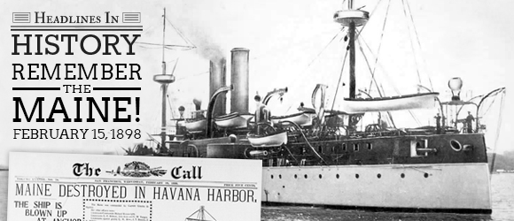
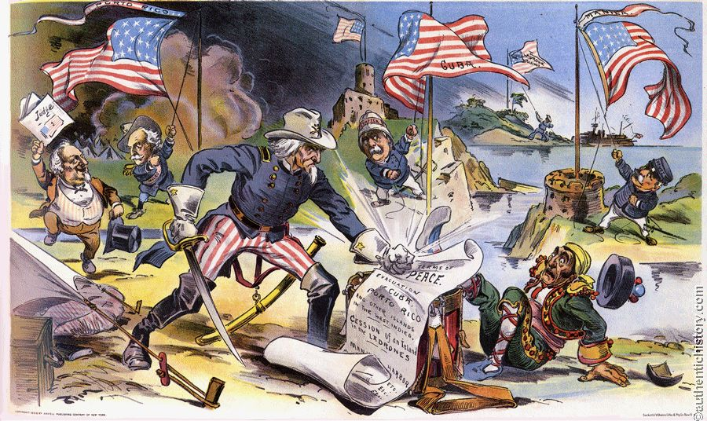

Background
'Yellow Journalists', most notably Hearst and Pulitzer, over-exaggerated Spanish actions in Cuba. When the USS Maine blew up in the capital city of Cuba and Spanish General Valeriano Weyler put Cubans in camps (not the fun ones), these journalists took the opportunity to anger Americans into pushing for war with Spain.
Aftermath
The US had a decisive victory, and they decided to give Cuba self-determination (no longer a Spanish colony), but with a major contingency. The US forced the Cubans to adopt the Platt Amendment, and they adopted it after a bit of rioting. The simple version of the amendment is that the US may intervene whenever it likes (including military occupation).
